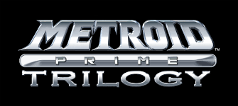
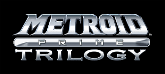

Sobre o site
Site criado para contar um pouco da historía de alguns Metroids.
A história de alguns Metroids:
Metroid Zero Mission (1986/2004)
Em uma exploração ao Planeta SR388, cientistas da Federação Galática acabaram descobrindouma criatura perigosa que desregulava o ecossistema do lugar. Eles tinham um corpo gelatinoso e
células especializadas em roubar toda a energia de suas vítimas. Foram batizados de Metroid e levados para serem estudados.
Entretanto, esta expedição foi atacada pelos Piratas Espaciais, que estavam determinados a transformar os Metroids em armas biológicas para espalhar o terror pela galáxia.
Eles levaram os Metroids para sua base no Planeta Zebes. Como ninguém poderia descobrir da existência dessas criaturas, a Federação contratou Samus para invadir a base dos Piratas,
destruir qualquer Metroid que encontrasse e colocar um fim nos seus esquemas nefastos.
Metroid Prime Trilogy (2002-2016)
Depois disso, acontece a trilogia Metroid Prime, em que Samus precisa conter a ameaça de Phazon na galáxia. Nada que acontece nestes jogos acaba interferindo na história principal, então eles podem ser encarados quase como uma franquia separada. Metroid Prime 4 está atualmente em desenvolvimento para o Nintendo Switch, então pode ser que em breve chegue o momento de relembrar as aventuras de Samus contra Dark Samus. Mas por enquanto, vamos focar nos Metroids mesmo.
Super Metroid (1994):-> Esse eu joguei muito!!
Super Metroid começa imediatamente após os eventos de Samus Returns. O último Metroid está em cativeiro. A galáxia está livre… Mas não por muito tempo. Logo após deixar o bebê com cientistas, a base espacial é atacada por Piratas Espaciais que levam o bebê Metroid mais uma vez para o Planeta Zebes. Sua base foi reconstruída em uma fortaleza ainda mais letal, mas Samus também está mais perigosa e motivada. Determinada a salvar seu bebê, ela invade a base e descobre que eles clonaram novos Metroids. A caçadora de recompensas é brutal, mata os clones Metroids e derrota todos os generais dos Piratas Espaciais, até chegar na sua líder: Mother Brain. Samus está na desvantagem e, quando ela está prestes a perder, um enorme Metroid surge para emprestar a energia que ela precisava para virar o jogo. Este Metroid a protege. Este Metroid é o seu bebê. Mas antes de Mother Brain ser derrotada, ela solta um feixe de energia que mata o Bebê Metroid, acabando assim com o último Metroid da galáxia. Parece que tudo estaria em paz, mas novamente, este também foi um grande erro.Metroid Dread (2021)
Metroid Dread é uma sequencia direta de Fusion, mas alguns enxertos foram feitos na história para acomodar os novos fatos contados em Metroid: Samus Returns, como o fato de que os Metroids foram criados pelos Chozos como uma espécie de guerreiro supremo, onde sua principal função seria de predador do Parasita X, esse por sua vez os grandes vilões de Fusion. Após os eventos de Fusion, onde supostamente os Parasitas X foram exterminados quando Samus de uma vez só destruiu o Biologic Space Laboratories (B.S.L.) e o Planeta SR388, ambos lar dos Metroids e Parasita X, a Federação Galáctica recebe um vídeo onde um Parasita X está vivo e solto na natureza, o remetente do vídeo é desconhecido mas sua origem aponta para o planeta ZDR. Com isso em mente, a federação decide enviar sete E.M.M.I., robôs de pesquisa com grande mobilidade e carcaça feita com alguns dos materiais mais resistentes do universo projetados para capturar amostras de campo em qualquer ambiente e extrair seu DNA. Mas um fato estranho acontece. logo após a chegada dos robôs em ZDR, a federação perde comunicação com eles e então Samus decide ir até lá investigar.